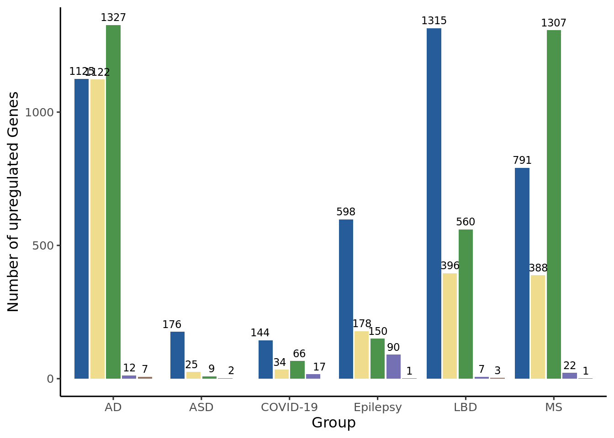
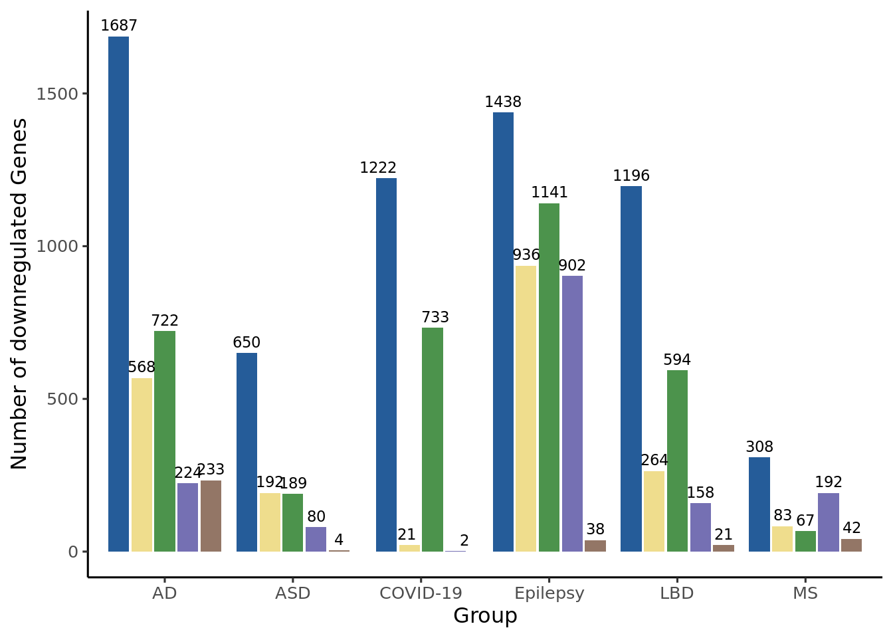

This script demonstrates the pipeline used for the calculation of pseudobulk DEGs between each pathology and the control population, related to Figure 5.
Pseudobulk DEGs were calculated with the aggregated counts of all cells/nuclei in each study group/pathology. Of note, DEGs were calculates accounting for the full HuMicA object, homeostatic cells (clusters 0, 4, 8), DIMs (cluster 2), DAMs (clusters 1, 3, 5 and 6) and macrophages (cluster 7).
The pipeline was applied on a loop for the abovementioned data subsets. The main steps are as follows: 1) Subset the HuMicA object (or not for the analysis of the complete object) 2) Obtain pseudobulk counts with AggregateExpression per sample/subject and remove genes with low count number. Note: the annot.xlsl file has been deposited in the “Support data” folder of this repository and consists of the metadata of the 241 individual samples composing the HuMicA. 3) Remove batch effect of the “Methodology” variable (cells vs nuclei) using ComBat_seq (sva). 4) Calculate DEGs between each pathology and controls. Note: In the original analysis, the DEG results were saved as a txt file for each HuMicA subset and posteriorly uploaded for plot design. 5) Gene ontology (GO) enrichemnt (clusterProfiler) for the lists of significant upregulated and downregulated DEGs for each HuMicA subset for each comparison. *Note: In the original analysis, each GO results was saved as a txt file and posteriorly uploaded for plot design.
clusterlist <-list(c("0","1","2","3","4","5","6","7","8"),c("0","4","8"),c("2"),c("1","3","5","6"), c("7"))clusterlist2 <-c("Humica","Homeos","DIM","DAM","MAC")for (i in1:length(clusterlist)) {# Subset objectsubset_humica <-subset(Humica, idents=clusterlist[[i]])subset_humica <-SetIdent(subset_humica, value = subset_humica@meta.data$Sample_ID)# Remove lowly expressed genes which have less than 10 cells without any countskeep <- subset_humica[["RNA"]]@counts[rowSums(subset_humica@assays[["RNA"]]@counts >1) >=10, ] %>% rownames # obtain pseudobulk counts and remove genes with low countsbulk_counts <-AggregateExpression(subset_humica,group.by=c("Sample_ID"), assays="RNA",slots="counts",return.seurat=F)$RNA %>%as.data.frame()bulk_counts <- bulk_counts[keep,]coldata <-read_excel("~/d/Ricardo/HuMicA/annot.xlsx")coldata$Sample_ID2<-gsub("_", ".", coldata$Sample_ID2)coldata$Sample_ID2<-gsub("-", ".", coldata$Sample_ID2)rownames(coldata)<- coldata$Sample_ID2colnames(bulk_counts)<-gsub("_", ".", colnames(bulk_counts))colnames(bulk_counts)<-gsub("-", ".", colnames(bulk_counts))coldata <- coldata[colnames(bulk_counts),]rownames(coldata)<- coldata$Sample_ID2all(colnames(bulk_counts)==rownames(coldata))#[1] TRUE# Adjust for batch effeccts<-ComBat_seq(bulk_counts %>%as.matrix(),batch = coldata$Methodology)# DESeq2## check if the order of the samples in cts (counts) and in coldata is equalrownames(coldata)<- coldata$Sample_ID2all(rownames(coldata)==colnames(cts))## Make Deseq objectcoldata$Group <-as.factor(coldata$Group)dds <-DESeqDataSetFromMatrix(countData = cts,colData = coldata,design=~ Group)dds <-estimateSizeFactors(dds)## fit modeldds <-DESeq(dds)## obtain table with results of all comparisonsgroup_list <-c("AD","ASD","COVID-19","Epilepsy","LBD","MS")res_ALL <-data.frame()for (z in1:length(group_list)) { res <-results(dds, contrast =c("Group",group_list[z],"No Neuropathology"))summary(res, alpha=0.05)#res res <-data.frame(res) res$gene =rownames(res) res$Group <- group_list[z] res_ALL <-rbind(res_ALL, res)}# add column with the HuMicA subset being usedres_ALL$cluster <- clusterlist2[i]# Filter only significant DEGsres_sig <- res_ALL[res_ALL$padj<0.05&abs(res_ALL$log2FoldChange)>1,] %>%drop_na(log2FoldChange)# Gene ontology## GO with upregulatedf =0results <-list()go_all <-data.frame()up_res_ALL <- res_sig[res_sig$log2FoldChange>0,]for (comparison inlevels(factor(res_ALL$Group))) { f = f +1print(paste(comparison))# Use tryCatch to handle errorstryCatch({ ego <-enrichGO(gene = up_res_ALL[up_res_ALL$Group == comparison,]$gene,OrgDb = org.Hs.eg.db,universe = bg_genes,ont ="ALL",keyType ="SYMBOL",pAdjustMethod ="BH",pvalueCutoff =1,qvalueCutoff =0.2,readable = T ) ego <-simplify(ego, cutoff=0.7, by="p.adjust", select_fun=min) results[[comparison]] <- ego@result %>%separate(GeneRatio, into =c("gene_pos", "gene_total"), sep ="/") %>%separate(BgRatio, into =c("bg_pos", "bg_total"), sep ="/") %>%mutate(FC = (as.numeric(gene_pos)/as.numeric(gene_total)) / (as.numeric(bg_pos)/as.numeric(bg_total)),cluster = comparison) %>%arrange(.$p.adjust) results[[comparison]]$Group <- comparison go_all <-rbind(go_all, results[[comparison]]) }, error =function(e) {# Print the error message (optional)cat("Error occurred for", comparison, ":", conditionMessage(e), "\n")# Continue with the next iteration# ... })}## GO with downregulatedf =0results <-list()go_all <-data.frame()down_res_ALL <- res_sig[res_sig$log2FoldChange <0,]for (comparison inlevels(factor(res_sig$Group))) { f = f +1print(paste(comparison))# Use tryCatch to handle errorstryCatch({ ego <-enrichGO(gene = down_res_ALL[down_res_ALL$Group == comparison,]$gene,OrgDb = org.Hs.eg.db,ont ="ALL",universe = bg_genes,keyType ="SYMBOL",pAdjustMethod ="BH",pvalueCutoff =1,qvalueCutoff =1,readable = T ) ego <-simplify(ego, cutoff=0.7, by="p.adjust", select_fun=min) results[[comparison]] <- ego@result %>%separate(GeneRatio, into =c("gene_pos", "gene_total"), sep ="/") %>%separate(BgRatio, into =c("bg_pos", "bg_total"), sep ="/") %>%mutate(FC = (as.numeric(gene_pos)/as.numeric(gene_total)) / (as.numeric(bg_pos)/as.numeric(bg_total)),cluster = comparison) %>%arrange(.$p.adjust) results[[comparison]]$Group <- comparison go_all <-rbind(go_all, results[[comparison]]) }, error =function(e) {# Print the error message (optional)cat("Error occurred for", comparison, ":", conditionMessage(e), "\n")# Continue with the next iteration# ... })}}
Plot the number of DEGs per subset and per comparison
The All_degs file consist of the joint data.table of the DESeq2::results() output obtained for each HuMicA subset and accounting only for the significant DEGs (padj < 0.05 and log2FoldChange > 1).
# annoatate up and downregulated DEGsAll_degs$direction <-ifelse(All_degs$log2FoldChange>0, "up", "down")All_degs$Group <-as.factor(All_degs$Group)All_degs$cluster <-as.factor(All_degs$cluster)# Create a data.table for upregulated and downregulated DEGsup_degs <- All_degs[All_degs$log2FoldChange>1,]down_degs <- All_degs[All_degs$log2FoldChange<-1,]# Barplot## Upregulatedggplot(up_degs, aes(x = Group, fill =factor(cluster, levels =c("Humica","Homeos", "DAM", "DIM", "MAC")))) +geom_bar(position =position_dodge2(width =0.9, preserve ="single")) +scale_fill_manual(values =c("#255C99","#efdd8d","#4c934c","#7570b3","#937666"))+labs(x ="Group", y ="Number of upregulated Genes") +geom_text(aes(label =ifelse(..count.. ==0, "", ..count..)), # Display label only if count is not 0stat ="count",position =position_dodge(width =0.9),vjust =-0.5,size =3 ) +theme_classic2() +theme(legend.position ="none")
Warning: The dot-dot notation (`..count..`) was deprecated in ggplot2 3.4.0.
ℹ Please use `after_stat(count)` instead.

# Downregulatedggplot(down_degs, aes(x = Group, fill =factor(cluster, levels =c("Humica","Homeos", "DAM", "DIM", "MAC")))) +geom_bar(position =position_dodge2(width =0.9, preserve ="single")) +scale_fill_manual(values =c("#255C99","#efdd8d","#4c934c","#7570b3","#937666"))+labs(x ="Group", y ="Number of downregulated Genes") +geom_text(aes(label =ifelse(..count.. ==0, "", ..count..)), # Display label only if count is not 0stat ="count",position =position_dodge(width =0.9),vjust =-0.5,size =3 ) +theme_classic2() +theme(legend.position ="none")

Plot GO
The GO_all_up_sig and GO_all_down_sig files consist of the joint data.table of the enrichGO output obtained for each HuMicA and accounting only for the significant terms (p.adjust < 0.05). GO terms were selected fro representation based on significance and biological relevance.
# GO of upreguated DEGs## Plot list of selected termsselected_terms <-c("dynein light intermediate chain binding","proton-transporting ATP synthase complex", "actin binding", "collagen-containing extracellular matrix", "minus-end-directed microtubule motor activity","structural constituent of ribosome","ribosome assembly","ATPase complex","myelination", "myelin sheath","WASH complex","immune receptor activity", "cytokine receptor activity","leukocyte migration","MHC protein complex","triglyceride-rich plasma lipoprotein particle")GO_all_up_sig<- GO_all_up_sig %>%mutate(logFC =log(FC),logFDR =-log(p.adjust))order_cluster2 <-c("Humica_AD","Humica_ASD","Humica_COVID-19","Humica_Epilepsy","Humica_LBD", "Humica_MS","Homeos_AD","Homeos_ASD","Homeos_COVID-19","Homeos_Epilepsy","Homeos_LBD", "Homeos_MS","DAM_AD","DAM_ASD","DAM_COVID-19","DAM_Epilepsy","DAM_LBD", "DAM_MS","DIM_AD","DIM_ASD","DIM_COVID-19","DIM_Epilepsy","DIM_LBD", "DIM_MS")ggplot(GO_all_up_sig%>% dplyr::filter(Description %in% selected_terms), aes(cluster2, factor(Description,levels = selected_terms), colour = logFC)) +scale_x_discrete(limits=order_cluster2)+scale_size_continuous(range =c(3, 9)) +geom_point(aes(size = logFDR)) +scale_color_gradientn(colours =c("lightgray","#A44A3F"))+theme(axis.text.x =element_text(angle =45, hjust =1))+border()
The significance of the overlap between the obtained DEGs was performing using the GeneOverlap package. The analysis was performed per HuMicA subset (comparing pathogies), related to Figure 5 B, and per pathology (comparing HuMicA subsets), related to Supplementary Figure 9. One example is presented bellow.
# Upregulated DEGs in the full HuMicA object (background with 17943 genes)Humica_degs <- All_degs[All_degs$cluster=="DAM",]up_Humica_degs <- Humica_degs[Humica_degs$log2FoldChange<0,]# Create lists of DEGs per pathologyAD_up_Humica_degs <- up_Humica_degs[up_Humica_degs$Group=="AD",]$gene ASD_up_Humica_degs <- up_Humica_degs[up_Humica_degs$Group=="ASD",]$geneCV19_up_Humica_degs <- up_Humica_degs[up_Humica_degs$Group=="COVID-19",]$geneEpilepsy_up_Humica_degs <- up_Humica_degs[up_Humica_degs$Group=="Epilepsy",]$geneLBD_up_Humica_degs <- up_Humica_degs[up_Humica_degs$Group=="LBD",]$geneMS_up_Humica_degs <- up_Humica_degs[up_Humica_degs$Group=="MS",]$geneHumica_degs_up_list <-setNames(list(AD_up_Humica_degs,ASD_up_Humica_degs,CV19_up_Humica_degs, Epilepsy_up_Humica_degs,LBD_up_Humica_degs,MS_up_Humica_degs),c("AD_up_Humica_degs","ASD_up_Humica_degs","CV19_up_Humica_degs","Epilepsy_up_Humica_degs","LBD_up_Humica_degs","MS_up_Humica_degs"))# Calculate significance of the overlap based on the Jaccard index and the p value (in the figures, the * asterisck identifies overlaps with p < 0.05)gom.obj <-newGOM(Humica_degs_up_list,genome.size =17943)Humica_mat_jaccard <-getMatrix(gom.obj, "Jaccard")Humica_mat_p <-getMatrix(gom.obj, "pval")col_fun =colorRamp2(c(0,0.05,0.10,0.15,0.25), c("#00112b","#185C5C", "#1f948cff","#B4D650","#FFDD55"))Heatmap(Humica_mat_jaccard %>%as.matrix(), cluster_columns = F, cluster_rows = F, col=col_fun)